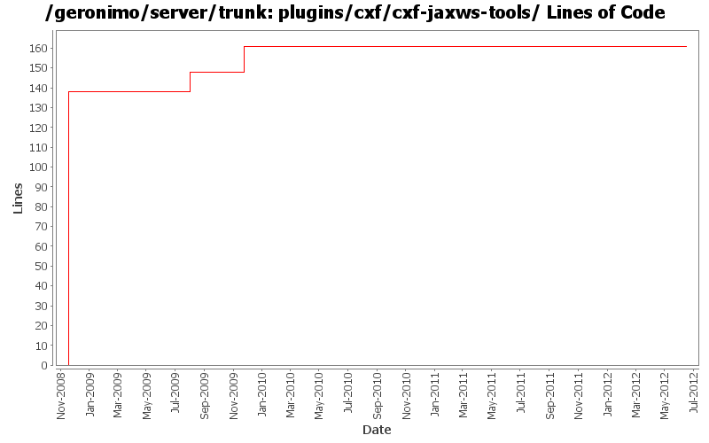

[root]/plugins/cxf/cxf-jaxws-tools
 src
(0 files, 0 lines)
src
(0 files, 0 lines)
 main
(0 files, 0 lines)
main
(0 files, 0 lines)
 history
(1 files, 134 lines)
history
(1 files, 134 lines)
 plan
(1 files, 26 lines)
plan
(1 files, 26 lines)
 resources
(0 files, 0 lines)
resources
(0 files, 0 lines)
 META-INF
(1 files, 18 lines)
META-INF
(1 files, 18 lines)

| Author | Changes | Lines of Code | Lines per Change |
|---|---|---|---|
| Totals | 8 (100.0%) | 177 (100.0%) | 22.1 |
| gawor | 1 (12.5%) | 138 (78.0%) | 138.0 |
| djencks | 5 (62.5%) | 36 (20.3%) | 7.2 |
| xuhaihong | 1 (12.5%) | 2 (1.1%) | 2.0 |
| xiaming | 1 (12.5%) | 1 (0.6%) | 1.0 |
Update trunk version to 4.0.0-SNAPSHOT
1 lines of code changed in 1 file:
Comment out those classpath configurations, will remove some of them after double checking
2 lines of code changed in 1 file:
GERONIMO-5290 fix many of the deprecation warnings from maven 3
7 lines of code changed in 1 file:
GERONIMO-4911 Put osgi manifest info in environment, generate manifest in the deployer not in car-maven-plugin. Reduce use of jee-specs, try to eliminate spring car. Don't try to build plugingroups or assemblies until they actually build
17 lines of code changed in 1 file:
GERONIMO-4655 upgrade version to 3.0-SNAPSHOT, make a few things more consistent
1 lines of code changed in 1 file:
[maven-release-plugin] prepare branch 2.2
1 lines of code changed in 1 file:
GERONIMO-4780 make jsr88 client avoid loading gbeans with encrypted attributes
10 lines of code changed in 1 file:
mostly working plugin that uses CXF tooling to generate WSDL and other artifacts for JAX-WS services (GERONIMO-4351)
138 lines of code changed in 1 file: